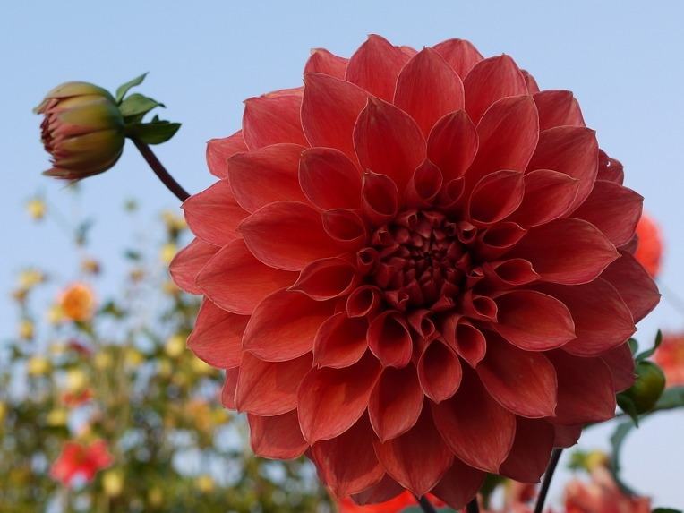

달리아는 스웨덴 식물학자 달이 품종개량과 재배에 큰 공을 세워 붙여진 이름이다.
나폴레옹 1세의 첫 번째 황비 조세핀은 서인도 제도 마르티니크 섬에서 태어났다. 마르티니크 섬은
달리아의 원산지인 멕시코와 가까웠지만 조세핀은 프랑스에 가서야 이 꽃을 처음으로 보았다.
나폴레옹과 조세핀이 거주하던 파리 교외 말메종 성에는 달리아가 가득했다.
조세핀은 이 꽃을 너무 좋아해서 손수 가꾸고 돌보았다.
하루는 조세핀이 여러 왕족과 귀족들을 성에 초대해 정원을 자랑하면서도, 꽃과 씨앗과 구근을
절대로 밖으로 가지고 나가지 못하게 했다. 그러나 폴란드 왕자가
정원사에게 뇌물을 주고 수백 송이를 꺾어오게 해 달리아는 곧 어디에서나 볼 수 있는 꽃이 되었다.
조세핀은 몹시 화를 내며 그 뒤로 달리아를 기르지 않았다.
